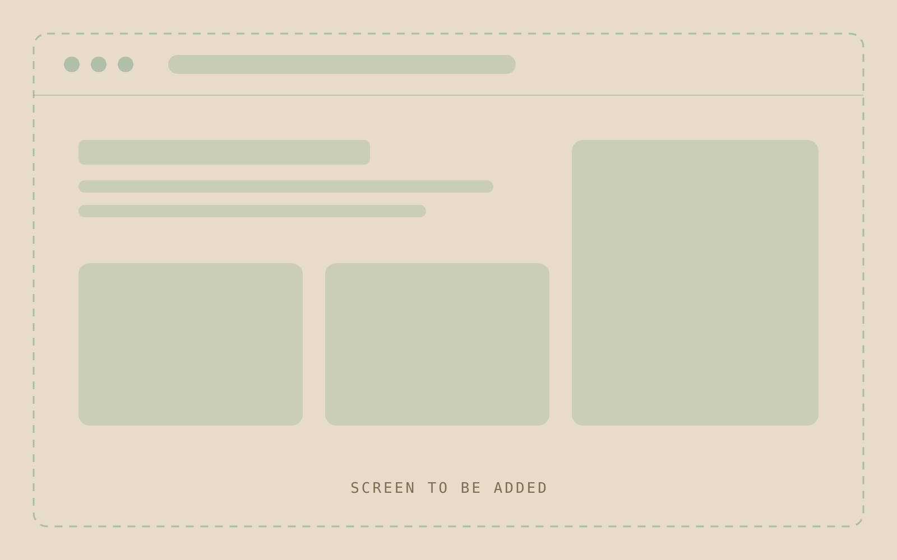

{{CATEGORY}}
{{TITLE FIRST PART}} {{TITLE EMPHASIS}}

Background
{{QUOTE, NO QUOTATION MARKS, THE CSS RULE IS THE QUOTE MARK}}
{{WHAT THE PRODUCT IS AND WHO IT IS FOR}}
{{THE EVIDENCE THAT SOMETHING WAS WRONG, THEN WHY THE PROJECT EXISTED}}
Project goals
{{THE GOAL, AND THE TARGET IT WAS MEASURED AGAINST}}
{{WHEN IT STARTED, AND WHAT WAS IN SCOPE:}}
- {{SCOPE ITEM}}. {{ONE LINE}}
- {{SCOPE ITEM}}. {{ONE LINE}}
Team and role
{{WHO WAS ON THE TEAM}}. My responsibilities were:
- {{RESPONSIBILITY}}
- {{RESPONSIBILITY}}
Design and outcomes
{{WHAT I DESIGNED, PLAINLY AND IN ORDER}}
{{THE HARD PART. A CONSTRAINT, A CUT, OR A FAILURE, AND WHAT I DID ABOUT IT}}
{{WHEN IT SHIPPED AND WHERE THE NUMBERS BELOW COME FROM}}
{{FIGURE}} {{UNDER 8 WORDS}}
{{FIGURE}} {{UNDER 8 WORDS}}
Experience
Open the prototype full screen

This page shows only parts of the project. In-depth and sensitive details, and the end-to-end UX, can be covered in person or during the interview process.